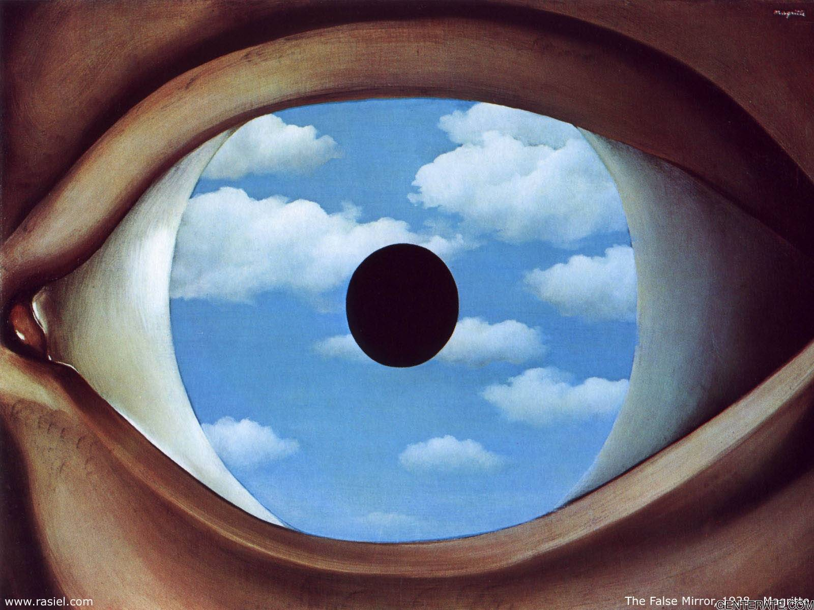

philisophy and themes
Many Surrealist artists and writers regard their work as an expression of the philosophical movement first and foremost, with the works being an artifact. Leader André Breton was explicit in his assertion that Surrealism was above all a revolutionary movement. Surrealism is a cultural movement that began in the early 1920s, and is best known for its visual artworks and writings. Surrealist works feature the element of surprise, unexpected juxtapositions and non sequitur.
spreading of the theory
From the 1920s onward, the movement spread around the globe, eventually affecting the visual arts, literature, film, and music of many countries and languages, as well as political thought and practice, philosophy, and social theory. Surrealism developed out of the Dada activities during World War I and the most important center of the movement was Paris.
